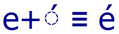
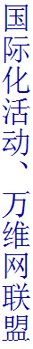
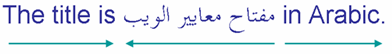
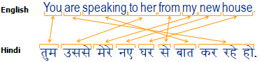
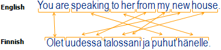

W3C
W3C
Site Navigation
Web Design and Applications 
- HTML & CSS
- JavaScript Web APIs
- Graphics
- Audio and Video
- Accessibility
- Internationalization
- Mobile Web
- Privacy
- Math on the Web
- Skip
- W3C »
- Standards »
- Web Design and Applications »
- Internationalization
 Internationalization
Internationalization
- On this page →
- what is internationalization? •
- examples •
- learn more •
- what is the internationalization activity? •
- current status of specifications and groups
Access to the Web for all has been a fundamental concern and goal of the World Wide Web Consortium since the beginning. Unfortunately, it is easy to overlook the needs of people from cultures different to your own, or who use different languages or writing systems. If you do, you will build specifications and content that present barriers to the use of your technology or content for many people around the world. Learn more below about:
What is Internationalization?
If you internationalize, you design or develop your content, application, specification, and so on, in a way that ensures it will work well for, or can be easily adapted for, users from any culture, region, or language.
The word 'Internationalization' is often abbreviated to 'i18n'. This is widely used abbreviation, derived from the fact that there are 18 letters between the 'i' and the 'n'.
Examples
One fundamental aspect of internationalization is to ensure that the technology supports text in any writing system of the world. This is why W3C technologies are built on the universal character set, Unicode. It may be necessary to also support other legacy character sets and encodings.

There are other factors to consider, however, when using characters. For example, Unicode based encodings allow the exact same text to be stored using slightly different combinations of characters. For efficiency and accuracy in comparing, sorting and parsing text, the different sequences need to be recognised as 'canonically equivalent'. You need to consider how to manage this when developing applications or specifications that perform or rely on such tasks.

Sometimes different writing systems require special support. For example, Japanese, Chinese, Korean and Mongolian can be written vertically, so the W3C is ensuring CSS, SVG and XSL-FO will allow for vertical text support. Text alignment and justification methods are also different for such scripts, and different again for scripts like Thai and Tibetan. Other local typographic conventions often exist for such things as emphasis, annotations, list numbering, and the like. These typographic approaches need to be supported in style sheets.
Arabic, Hebrew, Persian, Urdu and similar languages mix right-to-left and left-to-right text on the same line, and it is important to be able to control the direction of the surrounding context for that to work properly. This means that schema and format developers need to provide ways for authors to control direction in their content. Schemas, markup languages and formats should also support a number of other constructs needed for efficient handling of content during translation and localisation.

If you are dealing with HTML forms or designing ontologies relating to people's names and addresses, you will need to consider how to enable the many different approaches to formatting data that are possible around the world. You may also need to support alternative calendars, time zones and daylight savings, names and addresses in both native plus transliterated forms, etc.
Content developers and content management systems must also be prepared to deal with linguistic and cultural issues. For example, a sentence that is constructed by combining several phrases together in one language may be impossible to translate sensibly in a language with a different sentence structure. For example, in the Japanese translation of "Page 1 of 34" all elements in the phrase would be in reverse order. Your application must not restrict the order in which these elements can be combined. Specifications for technologies such as widgets and voice browsers should also avoid locking developers into an English-biased syntax for such things as composing messages or firing events associated with text.


Cultural problems also need to be considered. Symbolism can be culture-specific. The check mark means correct or OK in many countries. In some countries, however, such as Japan, it can be used to mean that something is incorrect. Japanese localizers may need to convert check marks to circles (their symbol for 'correct') as part of the localization process.
These are just a few examples of many. The key message is that design (whether it be of a markup language, a protocol, a content management system, a widget or application, etc.) needs to be flexible enough to accommodate local needs.
Learn more
Try one of our task-oriented listings below or go to the Internationalization Activity home page. We also have a Getting Started page, or if you just want to follow along with the latest news and ideas, try the aggregated data on our Planet Web I18n page.
- Authoring X/HTML/CSS
- Authoring SVG
- Authoring XML
- Developing specifications
- Setting up a server
- Developing schemas
- Using the Web
What is the Internationalization Activity?
The Internationalization Activity works with W3C Working Groups, related standards bodies, and with designers, developers and content authors generally, to raise awareness of and thereby avoid issues related to the international use of the Web. It also promotes solutions for the needs of specific cultures, languages and writing systems.
It does this by reviewing specifications, providing advice to developers and working groups, and developing guidelines, specifications and outreach materials.
Its mission is to ensure that the World Wide Web is world wide.
Recent Press
-
22 June
Research and Markets - “Big Data Market: 2018-2030 - Billion Opportunities, Challenges, Strategies, Industry Verticals & Forecasts”
-
10 April
Yahoo! News - “Web Browsers Are Starting to Kill Passwords”
-
10 April
Yahoo! News - “Major web browsers will support web-based fingerprint, facial authentication”